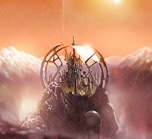
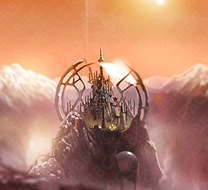
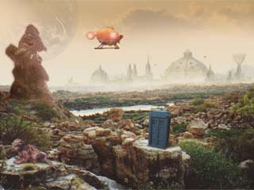
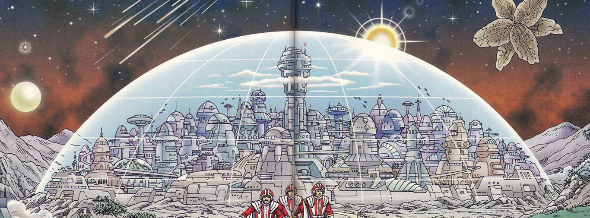
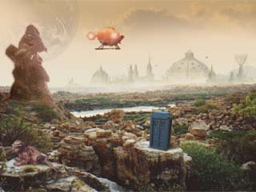
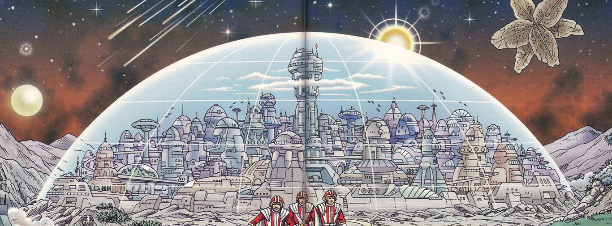
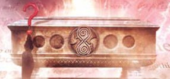
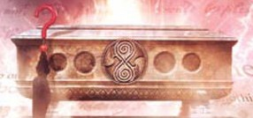

LOOM TO TOMB
Life on Gallifrey
"Well, the Time Lords are an immensely civilized race. We can control our own environment, we can live forever, barring accidents, and we have the secret of space time travel.""
"Well what's so wrong in all that?"
"Well we hardly ever use our great powers. We consent simply to observe and to gather knowledge."
"And that wasn't enough for you?"

TABLE OF CONTENTS

Click on paragraphs to see color coding for sources


BRAINBUFFING
A Gallifreyan begins their life as a cousin of of their House. The physical houses are sentient and the oldest living thing on the planet. The interior of a House and its furniture are designed to a massive scale to give newly loomed Gallifreyans a chance to feel like childrene. The artificially animated furniture needs to be house trained, otherwise it will tend to chase people around. The paintings whisper at passing cousins. The Druges are massive automated humanoid servants who can be found throughout the house.
After looming, childrene spend several decades undergoing brainbuffing both at home and at school. This is often supervised by a robotic avatroid. (Avatroids were originaly from the world of Ava before being enslaved by the Time Lords.) This might have involved Gallifreyan psychosurgeons. For the first 8 years of their life their extended family trains them in writing, culture, mathematics, and science. The Rhyme and Reason of Rassilon is required reading for a Time-Tot, and they are trained to use an abacus. By the end of this phase of brainbuffing their education surpasses that many human college students. Many Childeren recite prayers to the Time and her Sisters. While in the nursery, many learn to shuffle radiation out of their bodies by playing with Roentgen (or Rontgen) Bricks and Blocks. The spend almost all of their childhood learning to repress their impulses and focus on living a life of duty and obedience. Novices at the wear long black and white gowns. Black and White robes appear to indicate Gallifreyans who are not currently aliened with a particular Chapter.
RELIGON AND MYTHOLGY
The Book of Rassilon is a Time Lord religious text that the Other might have helped write. It starts with the words "In the Beginning..." Old Time legends and Gallifreyan mythology states that the Universe was born from a sentient singularity called Eru or the Great Old One Azathoth. At the Big Bang the being split into 10 dimensions (the Universe has 11 dimensions). After Event 0 the Mother Goddess used the Aurora Temporalis (Anvils of Heaven) to create and pour Time itself into the void of the empty Universe. The ratio 1 to 812 is key to understanding the 12 dimensional nature of quantum string theory. When the Time Lords discovered this ratio, many of the populace saw it a conclusive proof of the existence of the old Gods. But just as many saw it as conclusive proof that the gods could never exist. In the modern era Gallifreyans do believe that the ordered complexity of the universe points unquestionably to the existence of a creator. This creator's power takes the form of gravity when viewed from 3 dimensions. But (with the exception of some Shobogan cults) no Gallifreyans worship either Azathoth or the Mother Goddess, nor do they do call them "Gods."
Early in their history the Gallifreyans came to believe that if they killed all the evil people in the universe then the good people who remained would become evil. Light can not exist without darkness. If evil were destroyed then good would vanish as well. In the modern era, The philosophers of Gallifrey realize that all life relies on the death of others, and they have no answer for horror of that truth. As Lords of Time, many see themselves as being above conventional mortality. Indeed, most Time Lords consider notions of good and evil to outdated, archaic, redundant, or even incomprehensible. And sin is not a concepts that can be found in Gallifreyan culture. Damaging History is about as close to evil as Gallifreyan culture gets. Other Gallifreyans (including the Doctor) believe in The Great Moral Dialectic. It states that as the physical Universes keeps expanding, the Moral Universe continually refines itself towards goodness to maintain balance with evil. According to Gallifreyan science, the only thing that can stand against entropy and random decay is Life. Reality leads to complexity, which leads to life, which leads to civilization, which leads to ethics. This will lead to the ultimate superiority of Good over Evil.
Time Lords have also been known to mention a Devil from time to time. The Time Lord mythology speaks of the Dark God Valdemar who was destroy by the Old Ones. The battle to achieve this took centuries and is regarded as the biggest war in Gallifreyan mythology. Following this all of the Old Ones vanished, and this is considered to be the 6th Greatest mystery in the history of the Universe.
Their myths also speak of races of creatures that "wear the skins of men" (meaning aliens that look like Gallifreyans). Gallifreyan mythology has lots to say about the Daleks and the Klade including the fairytale The Emperor Dalek's New Clothes. Gallifreyan folk-tales speak of Gallifreyans abandoned and “raised” by humans. These Gallifreyans are said to develop amazing abilities and are ruled by their extreme passions.
The Story of the Rock is an old Gallifreyan fairy-tale designed to train time-tots of the dangers of curiosity and interference. In the story, two Time Lords are traveling in very hot desert filled with sand dunes. He finds a massive cube made of red stone. Imprisoned against the rock is the Chained Man. He’s chained to the Rock with long rusty chains. The Chained man is starved and thin with yellow pointed teeth and long hair. He begs the Time Lords come and look at what is behind the rock. One of them walks around to the other side – much to the pleasure of the Chained Man. This Time Lord vanishes and the remaining Time Lord waits in the sand for a week trying to ignore the Chained Man who pleads with him to follow his friend. The first Time Lord never returns and the second one realizes he was right not to give in to his curiosity
Doctor-like figures can be found appearing throughout the myths and legends of Gallifrey. He is considered to be something of an archetype by most, but some think he might be a Time Lord breaking the 3rd Law of Time to visit Gallifrey’s past. Others think he is some sort of shape-shifter or some sort of child-god.
Gallifreyan’s fear death even more than humans do. Some Time Lords believed the souls of the dead ended up in the sea and that you could hear them whispering. This could be the Hell referenced in Gallifreyan legends. Their Hell is a world of horror and pain from which there is no escape. Death might have served as a gatekeeper between Null-Space and the afterlife. Other Gallifreyan legends speak of a world in null-space called Nineveh where Gallifreyans go to die. This place is occupied the Watcher of Nineveh and is filled with ruined timeships. (It is likely that this legend refers to House and its never ending need to consume time capsules.) To avoid death, the minds (or souls) Gallifreyans are stored in the APC after death which is considered to be a form of heaven. The yellow six petaled Gallifreyan Flower of Remembrance (Memento Mori) is an omen for disaster. It is often scattered around Funerals and Tombings. There is a Gallifreyan word that is said [or rather thought] on the occasion of Death and Entombment of innocents.
Toclafane
- Stories are told in the nurseries of Gallifrey about the Great Vampires. Some Gallifreyans believe that Rassilon was a Vampire. Some even worship Rassilon the Vampire. Vampires still scare adult Time Lords, even in the modern era. The idea of Vampires in the Capitol is a particularly horrific thought.
- The Higher Evolutionaries known as the Parallel Sect were dimensional pioneers who could cross dimensions at will. They had symbiotic nuclei and were considered to be a myth on many worlds including Gallifrey. They were said to have created a web of all the parallel timelines.
- Legends speak of the Ancients of the Universe. The Gallifreyans have stories about the Nameless City of the Archons that exist in the Great Desolation. The Archons are the last of the Great Old Ones. These tales were found in the Necronomicon.
- Fairytales and legends include stories of Time Sprites. The stories claim that there is one Time Sprite caught in the heart of every TARDIS.
- Blue Fire (aka Mi'en Kalarash) is an ancient Gallifreyan myth. The Blue Fire is a Great Old One made up of tiny slivers of incremental time that form a time magnet. It lives in the wasteland between realties. The Blue Fire stimulates a sleeping victim's limbic system and feeds on the artron energy generated by the resulting fear and nightmares. Blue Fire did horrible things during the Time of Night and the Time of Chaos (both occurred during the Old Times).
- Childrene are told tales of the lost city of Altrazar the world of Nirvana which would appear in normal space once every thousand years.
- The myth of the Koltroxa tells of a being who was trapped drifting through time till her body aged to death.
- There are songs about impossibly old Time Vortex Leeches taking control of timeships and forcing them to travel to the location of their crew’s lost lovers.
- The Shakri nursery rhymes told of a powerful mythic species that served as pest controllers of the Universe, exterminating species that were viewed as being too dangerous before they could spread to other worlds. The Shakri were believed in the Tally, a time in the future when the cosmos would be perfectly balanced before everything ended. They lived in an adjacent dimension called Darkspace. From there they could reach all moments in time and space. They considered 7 to be a very important number and always traveled in groups of seven. Timetots were taught to never attract the Shakri's attention. These stories were designed to encourage young Gallifreyans to obey the rules.
- Malador is near mythical bogeyman in Time Lord history. He had had his conscience removed and created the Melkurs. Malador was imprisoned by the Union of Traken.
- The Watchmaker was the consort of one of Rassilon's generals. After the general was erased from history in a war with the Vondax, his consort traveled between dimensions trying to remove all temporal anomalies. In the early days of the Time Lords, she would appear, bringing death to many Gallifreyans who had been touched by paradox. She eventually became known as the mythological Watchmaker.
- After a Civil War in the Capitol, the first Lady President of Gallifrey, Imperiatrix Pandora, was executed via D-Mat dispersal. On Gallifrey legends will claim that the soul of the Imperiatrix lives on as a ghost in the Vaults. On Earth the stories will tell of Pandora and the box she opened. Other legends speak of the greatest warrior in the universe (sometimes describe as a goblin) who fell from the heavens and tore the world apart until a good wizard locked it up in the Pandorica. In reality Pandora lives on in a partition in the Matrix which has an access point to the Matrix.
- Sabjatric and Rungar were prisoners on Shada but some Gallifreyans believe that they were Gods of the Dark Time. Some Gallifreyans swear by Rungar. The Legends of Cuwirti, Ferisix, and Thrayke are important.
- There are nursery stories and rhymes told of the Fendahl (and the Fendahleen), Zagreus, Salyavin, the Krafayis, the Weeping Angels,and the Worshipful and Ancient Law of Gallifrey.

CHAPTER ACADEMY
When confronted with eternity some Novices are inspired, some run away, a very few go mad, and an extremely small percentage runaway and go mad. This last category are known as Visionaries because they have had their minds merged with the Vortex and were opened to all of history. They see the biodata threads of destiny and can make prophecies of the future and alternate time. This includes incredibly accurate predictions about species, places, and individual people. Their connection with history grows as time goes by leaving most in a semi-catatonic state. Unfortunately their madness leaves most of them babbling incoherently for their entire life. For most of the Rassilon Era, these prophecies were ignored as babble and the subject's family would keep them quietly locked away in institutions like the Quantum of Solace. It wasn't till the Time War the the High Council revived these pre-Rassilon techniques of training these Seers and assigned each one a Minder. Gallifreyans who successfully survive the Untempered Schism are know as Time Tots (aka Time Toddlers) and are given the rank of Novice.
Around the time of the Doctor's birth, many Time Lords (especially renegades) began abandoning their given names using a process called Elective Semantectomy. Using temporal engineering, their name would be edited out of history and have it retroactively replaced with a title. In the case of renegades the Semanectomy used to prevent embarassement to their house of origin. This led to many Time Lords being known by titles rather then names. These titles are based on what they do and how they do it. Traditionally, renegades have to leave Gallifrey and travel outer-space to find out who they are a choose their name.
The Prydon Academy is located at the northern boarder of Southern Gallifrey at the base of the northern slopes of Mount Cadon (also known Mount Lung, Mount Plutarch, and Mount Rycadia). The academy city like structure covers 28 square miles. The facility lacks a dome and is open to the air. Most of the buildings are ebony colored and fortress-like, with glass towers and turrets along the top. Covered sky-bridges interconnect them. Perfectly groomed lawns with little blue flowers surround the buildings with sand filled pathways leading between them. The majority of the buildings are dormitories, lecture halls, gymnasiums, and eateries. The academy has it's own TARDIS cradles and scaphe bays. Perfectly groomed lawns surround the fortress-like ebony buildings with glass turrets, which are accessed by, sand filled pathways and covered sky-bridges. The facility lacks a dome and is open to the air. The Black Collection is stored at this Academy. The Black Collection is stored at this Academy and monks taking the mystic studies course spend a great deal of time meditating and learning dark secrets in the upper levels of its towers. Because this is Gallifrey's only Time Academy (the institution which bestows the title of Time Lord) it is annexed to Sector 6 of the Citadel using dimensional junctures, and most (if not all) of the Junior Cardinals and Time Lord Councilors teach at the Time Academy. Its students are forbidden from climbing mount Cadon.
The Arcalian Academy is in the city of Arcalia, and the Patrexi Academy is in the city of Patrexi. The
Lodge of the Patrexian Academy is located in the Capitol. It has a gate
of solid light with a sphere of the first gold ever formed in the
Universe (though it should be noted that most Gold has no special value
on Gallifrey).
All of the Academies have dormitories, lecture halls, TARDIS bays and scaphe ports. They are all bordered by stone walls to keep the students from entering the outlands.
Gallifreyans are force-educated using Neural Training, which on high-intensity level, can teach someone to speak, read,
write, count, and play an instrument in one hour.
This probably includes drinking from bottles of Encyclopedia Gallifreya Volumes 1 through at least 11.
The
memory acids held in bottles burble telepathically when opened.
Despite this, there are a number of major similarities between the Prydon Academy and the schools on Earth in the 20th century. Pens and paper are often used by students at the Academy. The Warders ensured that the students followed the rules. Passing grades were difficult to achieve and each grade could take years to reach. A-Star Excellent and A-Star Distinction/Insightful/Outstanding where the highest achievable grades.
In Infant School novices learn
quantum mechanics which are considered by Gallifreyans to be synomous
with poetry. Even the simplest geometry problem is solved using the
first 5 dimensions. And their cartesian
geometry, involves 26 dimensions. Despite all this, one should keep in
mind that there are math problems so complex that even the Time Lords
haven’t managed to solve them yet. While still Time Tots they read 4 dimensional pop-up
books like
Our Planet's Story
and Every Gallifreyan Child's Pop-Up Book of Nasty Creatures From Other Dimensions. They are taught to recite their 2337 times tables. They attend Temporal Protocol classes. They also study mind-shielding, thermodynamics, cybernetics, medecine, botany, and super-logic. They are
also taught how to live and act in society and that all life is
sacrosanct and that Gallifreyans need to be dedicated to a life of
service to Time. Gallifrey's obsessive work ethic of service to the Worshipful and Ancient Law of Gallifrey is instilled in the students.
Childrene play games that involve slowing their own heart till they appear dead.
Some of the games the childrene play might involve extra-galactic space travel. At around 11 or 12 years old most Gallifreyans are given a two foot tall intelligent teddybear-like robot. This homunculus functioned as a playmate for the child.
The Prydon College's Time Academy is the only one that can grant the title of Time Lord – so all would-be Time Lords (regardless of chapter) have to attend it after graduating from their chapter’s academy. While, many Gallifreyans (such as future members of the Watch or Traffic Control) attend the Prydon Academy, but only a very select
few are chosen to become Time Lords. Novices take the entrance examination for the
Time Academy while still in brainbuffing. Failure was one of the major fears of every 7 year-old.
If they are score is accepted then, after 12 years
with their Chapter's Academy, they can be enrolled in the Prydon Time Academy. If they don't pass the examination then they remain at their Chapter's Academy.
Students who remained at their chapter academy generally continue their studies and could spend decades reaching the 6th or even the 7th grade.
For information about the training, and powers of the Time Lord elite of Gallifrey see this page: Time Lord Training

ADULTHOOD
SHOBOGANS AND OUTSIDERS
LOVE AND MARRIAGE
The Curse of the Pythia rendered almost all Gallifreyans sterile. Though they are physically capable of sex most have no real sex drive. Many, like the Doctor, live most of their lives in celibacy. Losing one's virginity makes it much more difficult (if not impossible) for Gallifreyan technology to read ancestral memories from the subjects biodata. While some Gallifreyans will enjoy erotic dancers, actual prostitution is very rare (though Low Town does support a few brothels). Most Gallifreyans have little compassion and have difficulty relating to each other on an emotional level.
Despite all this, some Gallifreyans do fall in love and some undergo marriage. However Gallifreyan Marriages are almost always undertaken to maintain the power of the Chapters by strengthening the political power of the Houses involved. The bride (and possibly the groom) traditionally wears white robes and has her hair braided. There is at least one case where two Gallifreyans remained married through several regenerations. A Gallifreyan generation is 10,000 years. The Pythia's Curse fades in the pre-War era allowing natural reproduction to occur, and by the end of the Time War there are 2,470,000,000 children on Gallifrey.
 

 



GALLIFREYAN CITY-COMPLEXES
While not the Capitol, Arcadia is known as Gallifrey's Second City. It would take well over two months to walk from the Capitol to Arcadia. (so around 2000 miles?) By the War Era it will have become Gallifrey's best protected city. The Palace of Arcadia is one of the finest restaurants in Arcadia City. Gallifreys sometimes swear by this city.
Prydos is an old city built on an artificial mound in great plane. Imports from all over the galaxy (and from any point in time) can be found for sale at Prydos. Its streets are paved with mosaics which present the history of the city. The shops and stalls in the city of Prydos have foods from across the cosmos – even from the Earth and Venus. Concept shops in Prydos City sell ideas from across the cosmos.
Prydos, Arcalia, and Patrexi are 'academy' cities surrounded by stone walls. The ground around every city's entrances are covered in gravel-like Sound Shingles which allow automated systems to detect people approaching the metal doors. Olyesti is one of the Three Minute Cities in the East.
Some cities (like the Capitol) have a low town where the society of poor that has formed in the foundations of the Capitol. The Gallifreyan elite refer to the New Age Time Lord dropouts who live in Low Town as Shobogans, while the low towners call Time Lords Timeys. The Shobogans are know for being trouble makers and vandals. They have their own form of writing, and often inscribe the words 'Bad Wolf' on walls and pavements.
Most Gallifreyans (and all Time Lords) never venture beyond the cities into the wilderness of the Outer Gallifrey. The exception were those that wished reject the traditions and technology of the Time Lords and become Outsiders. During and after the Time War the number of Outsiders grew. Most turned to farming and some even sold their produce to the Time Lords in the Capitol.
Using block-transfer computation, massive, transcendental, buildings can be fabricated in place almost instantaneously. But the architectural plans and virtual model must be completely worked out beforehand. Gallifreyan building materials are molecularly bonded, and plates have titanium rivets. The strong and ridged gravinium is the most common building material on Gallifrey. The valuable brass like Machenite is the finishing material of choice for the interior of important rooms. Lead is not a common building material and few on Gallifrey are trained in its manipulation.
Gallifreyan furniture is kinetic and be re-arranged using a control panel. Many areas of the city are rigged with panoptics that observer and recored all activity. For this reason some areas are configured to project time bubbles that provide users with 5 micro-spans of total privacy. Gardens with carefully mowed grass are contained in their own glass domes.
LIFE ON GALLIFREY
Pandaks (made of brass), Pounds, Guineas and even ancient Treazant coins are all used as currency. A guinea will buy you a few drinks in a bar. Gallifrey has Inheritance Laws and Temporal Taxation, however most uses of currency on Gallifrey appear to be completely symbolic and ritualistic. Many Gallifreyans don't actually understand how money works or what the orginal point of it is. For these reasons corperations judge Gallifrey to have a very low potential for commercial development. Even the unemployed have a standard of living greater then most beings in the cosmos. While there is no requirement to be employed, once out of school most Gallifreyans become bored and take up a hobby or begin working some sort of job to help the community. Each generation of Time Lords devise increasingly complicated traditions and rites to prevent the Gallifreyan people from realizing how boring life on Gallifrey is.
RECREATION
Time Lords appear to enjoy isolating themselves from the ambient complexity of Gallifreyan life, and most Gallifreyans prefer to use Sensory Tanks like those found in the Quantum of Solace. The oxygenated liquid the subject is immersed in sooths away all stress and worries and induces dreams that fulfill the user's deepest and most wonderful virtual reality fantasies. While floating in the fetal position a Gallifrey can experiance exotic sensory replications include speed-skating on the frozen moons of Plattos or climbing the sulfurous active volcanoes of Ignos. The water is imbued with oxygen, nitrogen, chlorine, dopamine, and protein chains (which contains the intelligence of the Sensory Chamber). The chambers use timers to awaken the user, though a switch inside the chamber can also be used to deactivate the chamber. A Director of Calm oversees operations. Other Gallifreyans prefer the more complete relaxation of retreating to zero environments.
Gallifreyan and Time Lord Games
Junior Time Lords (and others with symbiotic nuclei) would also play the Perigosto Stick Game. This form of Time Lord Juggling, involves using Time Lord powers to keep a 4-dimensional rod with a sphere or cube at the end in motion, without letting it fall back into the normal space-time continuum. This technique is called Transmigration of Object and was often done as a party trick, even though it usually took hours of preparation. Most Perigosto Sticks are also designed as musical wind instruments and the Time Lord can try to use the shift in air flow to play music while juggling the stick. Shifting everything in a defined area forward a few seconds in time creates an impenetrable black wall. This is sometimes done on a small scale as a parlor trick. The Cardinals always warn the students that Transmigration of Object damages their biodata.
The people of Gallifrey invented Chess. Four-D Chess is a popular Time Lord game (though some Time Lords prefer Three Dimensional Chess). Not only can the pieces move on three vertically stacked boards but they can also move forwards and backwards in time. However the First Law of Time must be observed during play meaning that the its possible to get the other player to lose by forcing him to create a paradox. And indeed this is a common way of winning. Gallifreyan Chess Sets are sometime custom carved to look like a Time Lord’s adversaries and allies.
Gallifreyan Chequers has 2 colors - red and white. Pieces include: Presidents Cardinal, President's Commander, Chancellor's Castellan, Gold Usher's Captain.
Gallifreyan playing cards are round and have the following suits: Flames, Owls, Clouds, Souls, Deeps, Mesmers, and Dominoes. Face cards include the Hand, the Duke, and the Rogue. They can use these cards to play Five Dimensional Cribbage.
Sepulchasm was a game for one or two people that was created during the Old Time. The board was shaped to represent a mountain range with colored models of various House marking a path of squares. There was a playing piece of matching color for each house. Each player would control three of the pieces and using two 8-sided dice to dictate their pieces movement along the path. A roll of 4 on one die and 5 triggered a Sepulchasm which would split the board down the middle. The player(s) used psychic powers to keep their peices suspended over the chasm. The first player to fail to keep their pieces in the air lost.
Gallifreyan Labyrinth Game: The point of this game is to get your opponents lost in a (dimensionally transcendental?) maze and then manipulating their movements by subconsciously training them to make certain turns. At the height of its popularity there were Labyrinth games on every street corner and even in the Panopticon.
Mindbending (aka Time Lord Wrestling) is a Time Lord game that involves a telepathic battle between two contestants. They try to regress each other mentally through their previous incarnations. Psychic duels often take the form of a physical wrestling match within the minds of the contestants and telepathic observers. Mindbending is just a game but it can end in deathlock if a contestant is pushed back to the point of looming.
While at the Academy Initiates often play Eighth Man Bound. This extreme 'rite of passage' claims the lives of 15 Gallifreyans every macrosemester. A symbiosonic generator is used, and the student's classmates (called The Inquiry) sit around him and chant his name while the student tries to predict his future incarnations. An Arcalian managed to discover what his first seven bodies but couldn't see his eighth. Thus the Arcalians named the game Eighth Man Bound.
Scratchin is another Gallifreyan game.
FOOD AND BEVERAGES
However, on special occasions Karmine pudding, Dactyl Eggs, Magenta Fruit, blue fruit, chocolate, broth, shortbread, oatmeal bread, gingerbread, cake, crayperry, roasted Grockleroots, and Gallifreyan Pizza is eaten. Sealak meat is something of a delicacy. But most Gallifreyans do not like beef or onions.
 

DEATH OF A GALLIFREYAN
TIME LORD CHRONOLOGY
Gallifrey time is told in 18 hour days. 9 hours of daylight and 9 hours of night. The length of the hours are dependent on the season and geographical location. The passage of hours is marked by the ringing of bells. The number of rings denote the hour. Some Gallifreyan clocks have 12 divisions. 48 hours is a commonly used division of time.
A Gallifreyan Cycle is approximately 23 years (likely 24 years or 4 Spans). Spans are another unit in common usage (which is also used by the Sisterhood of Karn). One Span is 6 years (so a micro-span equals about 200 seconds). Time Lord watches can synchronize themselves to the local time instantaneously (use the same technique as the translations systems). The watch face morphs to match local time keeping conventions. These watches are standard equipment for field operatives.
Unit Conversion
- 1 Gallifreyan Second = 1 Earth Second
- 1 Gallifreyan Minute = 1 Earth Minute
- 1 Gallifreyan Hour = approximately 1.3 Earth Hours (or 80 Earth Minutes)(depending on the season and latitude)
- 1 Gallifreyan Day = 1 Earth Day
- 1 Gallifreyan Month = 27 days (or .81 centi-spans)
- 1 nano-span = .19 seconds
- 1 micro-span = 189 seconds (or 3.2 min)
- 1 milli-span = 52.6 hours (or 2.2 days)
- 1 centi-span = 22 days
- 1 span = 6 years
- 1 kilo-span = 6000 years
- 1 cycle = 4 spans (or approximately 23 years)
- 1 epoch = tens of millions of years (also known as Deep Time)
INNER TIME
Transduction Barriers separate Gallifrey’s continuity and history from the rest of the universe by locating it in a Micro-Universe outside of Time. Thus when you are on Gallifrey, you are in Inner Time, "outside" of the Universe. This is sometimes known as Gallifreyan Absolute Time. In addition to this, its past is protected by powerful Temporal Baffels, Backtime Field Buffers, Absolute Temporal Barriers, and Governing Circuits built into all their time travel technology. All of these keep the Time Lords in sync with Gallifrey's Relative Causal Nexus.Time Lord Dating Systems
Time Lords have been know to use all of the following dating systems during the Rassilon Era:
-
Local Dateline / Gallifreyan Absolute Time: (Mission to Magnus, The Gallifrey Chronicles,
TV Movie) -
This form of Time Lord Dating began with the installation of the Eye of Harmony in the Citadel - which was the beginning
of the Rassilon Era.
For this reason the dates are given with the prefix RE for Rassilon Era. Documents the passage of time from the point of view of the people living within Gallifrey's Inner Time. The Doctor would have been loomed in 2004716.44 (The Gallifrey Chronicles claim the Doctor was loomed on 4756.7 RE But this is 40.5 years off from all other sources).
For convenience sake Time Lords usually abbreviate Local Date Line to five digits (ie 5725.2 RE).
- The Relative Date can be found by adding 2004716.44 to the Doctor's age.
- The Local Dateline (ie the 4 diget version) can be found by adding 4716.44 to the Doctor's age.
-
Date Index / Gallifrey Mean Time: (Deadly Assassin, Armageddon Factor,
The Gallifrey Chronicles) -
Date Indexes can be written 3-0-9-9-0-6 or it can be abbreviated to 2 digits (ie 92). Documents the passage of time from the point of view of the people living within Gallifrey's Inner Time.
- Date Index (DI) can be found by adding 309456 to the Doctor's Age.
-
Gallifreyan
TL Dating System:
(FASA,
The Gallifrey Chronicles) - TL works like the Relative Date system, thus 2004756.44 RE would be 100447 TL.
- A TL Date can be found by adding 100448 to the Doctor's Age.
-
Relative Date is often used for discussing events that occurred in the outside universe relative to Gallifrey
time.
Relative Dating began with the installation of the Eye of Harmony in the Citadel - which was the beginning of the
Rassilon Era.
The Eye of Harmony was activated in 3.5 Billion BC.
For example
1999 AD
(the 20th century) would be
3,5
00,034,139.89 RE.
Day 1 of the Gallifreyan new year is between day 274 and day 310 on Earth (ie Dec 30 10:47 pm EST is 1/5th of the
way through the Gallifreyan year).
Thus New Year's Day on Gallifrey probably begins around Oct 20.
5000 AD would be relative date 1-1-1-5-0-0-0.
- While it is based on anchoring of the Eye of Harmony, any Earth date can be translated into Local Dateline (LD) by adding 3503412400.2 (about 3.5 billion) to the Earth year if after 1 BC or 3503412399.2 if before 1 AD.
-
GRT
(Gallifrey Relative Time)
(Timelink,
The Gallifrey Chronicles) - GRT
effectively gives the Date in Humanian Era AD/BC dates.
Despite being in Inner Time, Gallifrey is still liked via a real-time analogue to its former location in the Web
of Time.
This analogue time moves at a different speed then the rest of the Universe. Originally it was about 5 times faster,
but the differential between Inner Time and Outer Space has been slowing by about 1 second every hour
(so about 1 year for ever 3,600 years).
It is known that the Doctor was born around March 30th,
1213 GRT, and when Greyjan had served
one year as President of Gallifrey (and the Doctor was 75
3), the
GRT Earth date was 1752 AD.
(The absence of the 3.5 billion year time changes has been explained by a popular fan theory that the Magnatron
was used to shift Gallifrey forward in time after Rassilon's death.)
- So to find the date in the Humanian Era dating one would use the following equation: GRT = .00028 DrAge^2 +.505*DrAge + 1213.25 (or 1214.25 for ages before -1213.25).
- A simple way to roughly estimate Earth dates in the Doctor's life can be found using GRT = .61*DrAge + 1213.25.
- At some point (probably at the time of the Nine Homeworlds Project) this system was changed. This might have been caused by shifting Gallifrey's system into a new Time Zone. Whatever the cause, it is known that the end of the Last Time War intersected the Humanian Time Zone well before 2596 AD.
-
Revised
Local Dateline (Neverland) -
This
revised system of Local Dateline is used by the Matrix and APC for dating events.
It was probably designed to correct for the slowing of Inner Time. Because it is based on the flow of real
time in the external universe it is free from the distortion found in the other systems. The Matrix records Romana's
inauguration as President of a
Clone Gallifrey as being 6776.6 and her
mission to Neverland occurred at 6798.5.
- To find dates in this system add 5720.44 to the Doctor's Age after he turned 1056.

GALLIFREYAN HOLIDAYS
- Day 1 (Oct 20th~) Creation of the Web of Time
- Day 128 (Feb 24th~) Intuitive Revolution Day
- Day 162 (Mar 30th~) Otherstide /Othermass/Festival of Freedom: SEE NOTES BELOW.
- Day 175 (April 13th~) The Thirteenth Night: On the 13th evening after Otherstide the Gallifreyan Cults performed the banned theater of Mimesis.
- Day 205 (May 12th~) Death of Omega, almost certainly known as the Feast of Omega
Otherstide
- Housekeeper: "At Otherstide, the time of renewal, we pledge our devotion to the House. Book of Foundations. Chapter Prydon. Verse six seven three.
- Cousins: - respond with the House's name -
- Housekeeper: "We will always return to the Loom from which you wove us."
- Cousins: "Ancient House."
- Housekeeper: "Sheltering generation on generation of your Kith since the birth of the New Time."
- Cousins: "Home."
- Housekeeper: "We are your plans, designs and architecture. We, who rejoice in your name of..."
- Cousins: - chant the name of their House six times -
LANGUAGES
Old and Modern, High and Low
Gallifreyan Morse (similar to Morse Code), is easy to translate, Rassilon's Cipher is very difficult to decode and only a few Time Lords are trained to understand it. Rassilon's Cipher can be decoded using the algorithm imprinted in the atomic structure of an authentic seal or Rassilon.
Old High Gallifreyan

Δ:x ◫.ʮ: Øx
Harp of Rassilon
Old High Gallifreyan had 10,000,000 letters in its alphabet and worked well as code for computer programs. This language had at least three levels of interpretation, each of which added a different subtext to statements. The versitility of the tenses made it easier for time travellers to speak about events. Despite this, Gallifreyans of this era tended to write a lot just to convey simple ideas. Many of these letters appear Greek, and it is possible that the early Time Lords had some influence on Greek culture. This language was the most magic-like power ever wielded by the Gallifreyans as a whole. Before the anchoring of the Web, this language possesses great powers and, when correctly harnessed, can raise empires and destroy gods. It was used by the ancient Gallifreyans and early Time Lords, but in the modern era very few Gallifreyans know how to speak or read it. Humans would have a great deal of difficulty speaking this language.
Old Low Gallifreyan
Old Low Gallifreyan is another language that was once used, and was know for its foul curse words. Its probably related to the form of writing used by the Shobogans of Low Town.
Modern High Gallifreyan
Modern High Gallifreyan (sometimes known as Circular Gallifreyan) is a form of writing that even TARDIS telepathic circuits can't translate for lesser species. As such, it was often used for sensitive technical or scientific notation, as it couldn't be easily decoded by other species. In the Time War era everything the Time Lords wrote was in this more secure Gallifreyan.
The Patrexian Numbers serve as a numerical base to everything that Patrexian's create. Messages are written in equations that must be solved to be deciphered. This half writing, half math language is very precise, but not very practical. It is a base 7 counting system
The fan-made Circular Gallifreyan writing style created by Loren Sherman has been used on multiple liscensed Dr Who products. Lots more information about it can be found here
Modern Low Gallifreyan
The Modern Low Gallifreyan Omegabet is a mathematically based language that has only 1,000,000 characters. Omega has a capital Greek letter Omega mounted on his helmet in Arc of Infinity. A standard Gallifreyan keyboard has 723 letter keys, and 13 numeric keys across the top. There are only 12 keys on a standard Gallifreyan numeric keypad. Its possible that their number system is base 12 and the 13th key on a full keyboard might be for positive/negative notation. Messages are written in equations that must be solved to be deciphered. This half writing, half math language is very precise, but not very practical.
[1][2][3][4][5][6]
[7][8][9] [10][11][12]
Known Gallifreyan Words
- Arkytior: High Gallifreyan for 'rose'
- Doctor: This word might mean 'the good man.' People who possess a doctorate are greatly honored in Gallifreyan society. (The Doctor's extensive visits to the Earth lead to the word being adopted into several of their languages as well.)
- Childe (plural Childrene): a term created to distinguish young loomed Gallifryens from the children of lesser species.
- D'Arvit: a curse word
- Gallifrey: they that walk in shadows
- Gjara'vont: of darkest thought
- Grumblies: kid slang for adults
- Karn: Winter?
- Meyopapa: appears to mean master
- Mi'en Kalarash: blue fire
- Opticon: the meeting place within a village
- Pre-ja Vu: (Modern Gallifreyan) the sense that you're going to have been somewhere before. (coined by Academi Plurix) (Deja Vu is a form of astral projection)
- Shobogan: This term was what the ancient Gallifreyans originally called themselves (before the discovery of regeneration). Over time the term Shobogans became slang Gallifreyan for 'new age' dropouts, who reject the traditions and culture of Rassilon’s Time Lords.
- Swowana: Snow?
- Tardis: probably means timeship
- Tegorak: black mountain
- Toclafane: A general descriptor for numerous different bogeyman-like entities.
- Wreck-Riders: young Time Lords (probably Junior Time Lords) who go joyriding in damaged TARDISes.
GALLIFREYAN SAYINGS, RHYMES, TEACHINGS, AND JOKES
- "6,000 is the new 4,000" - a phrase that was popular around the time of the story Shada.
- "A leader's greatness is best judged by the quality of her advisers." - from Pelatov's Collected Sageries.
- Since the live in enclosed cities Gallifreyans never say good morning or other references to the location of the sun.
- "All that was long ago as the vortisaur flies."
- "Broken House" - refers to a dying bloodline.
- "By the Powers!"
- "By Arcadia!"
- “Everything has its time and everything dies” - possibly a Time Lord axiom.
- "Ferisix and Thrayke protect us"
- "For Rassilon's Sake!" - Gallifrey profanity
- "...for the rest of their quantum days"
- "Frost in the fire and the rocking chair / Frost in the hearth, frost in the ladle / Children's voices in the air / Wind that rocks the empty cradle." - Mid-Gallifreyan Nursery Versery
- “Gallifrey and her Children” - could be a reference to Mother Matrix and her Time Lords?
- "Great Rassilon" - Gallifrey profanity
- "History is time's way of preventing everything from happening at once" - Graffito the Prydonian
- “Ink scratcher” - slang for the lowest job a Time Lord can have.
- "It's not the size that matters, its how you use it." [paraphrased]
- "Life begins at 750"
- "Life begins at 1500"
- “Like Trying to close the Eye with a finklegruber” - a Gallifreyan phrase used to describe a hopeless task.
- "Loom-calm" - a phrase indicating a very quiet peaceful and safe place.
- "Love, _[name]_" - how Gallifreyan letters are often signed.
- "Marnal's Error" - refers to taking action without truly understanding the situation.
- "Never take your eyes off of anyone bearing orange and scarlet robes"
- "Never trust a Time Lord" (presumably said only by Gallifreyans)
- "...never trust a Venusian Shanghorn with a perigosto stick!" - the punch line to a funny joke.
- “Old Pythia” - insult for females.
- “Omega’s Orifice” - Gallifrey profanity. During the Time War using the names Rassilon, or Omega is considered blasphemy.
- "...or I shall lay your soul to waste!" - a threat.
- “Othering Other” - Gallifrey profanity
- “Othering Omega” - Gallifrey profanity
- “Otherf---er” - Gallifrey profanity
- “Peoples of the Universe, please attend carefully. The message that follows is vital to the future of you all. I am President ____ of the High Council of Time Lords” - This appears to be the traditional Time Lord way of opening a speech to Spiral Politic."
- "Pig-rats deserting a a disintegrating time skiff."
- “Rassilon’s Blood” - Gallifrey profanity
- "Rassilon's Death" - Gallifrey profanity
- "Rassilon's Ghost" - Gallifrey profanity
- "Rassilon's Rod" - Gallifrey profanity
- “Rassilon speed you!”
- "Scares the Staazula out of me"
- “Rot in a black star” - an insult
- "Rungar protect us" - Rungar is a criminal imprisoned in Shada
- "Shell snacker" - an insult that probably refers to Gallifreyans who consume the hallucinogenic nuts of the Cerub Tree.
- "Sweet mother of Chaos" - Gallifrey profanity
- "Thalia's bones!" - Gallifreyan profanity
- "Thank Heavens!"
- "Thank Rassilon"
- "Thanks be to Gallifrey"
- "Thank the Other!"
- "The first rule of government is: The solution is always the next problem"
- "The moment has been prepared for." - might be a Gallifreyan phrase referring to Regeneration.
- “The mouth of the Vortex” - probably a Time Lord expression similar to “tip of the iceberg. ”
- "There are some corners of the Universe which have bred the most terrible things. Things which act against everything we believe in. They must be fought." - ancient child's maxim
- "There is a crack in everything. / That's how the light gets in." - part of a Gallifreyan poem.
- "There is always still-time, and there is always flowing-time"
- "Three two one, three two one, / A wreath of roses lay. / Rassilon's dead and Omega's lost, / The other one's gone away. / Three to wonder and bide their time, / They'll all come back one day." - Transcribed from hieroglyphics in the Domdaniel Caverns on Strava.
- "Who unto Rassilon's Tower would go / Must choose - Above, Between, Below / Who unto Rassilon's Tower would go / Must fight with those used to know / Who unto Rassilon's Tower would dare / Must dance across the deadly square. / If Rassilon's Tower you will step in / Then you must choose - to lose or win." - The Nursery Rhyme of Rassilon's Tower from Lullabies for Time Tots by Benncuiq III.
- "Those who plot the destruction of others, often fall victim themselves." - from Pelatov's Collected Sageries
- "Time moves in circles" - old Gallifreyan proverb
- “Time will tell, it always does.” - an expression that dates back to at least the time of Omega.
- "Twelve rejuvenations all, / and not a season more, / hath been the lot of the Time Lords, / since the darker days of yore . . ."
- Urizen’s Beard – Time Lord profanity.
- "What goes bang thud, bang thud, bang thud, bang thud, bang thud, bang thud, bang thud, bang thud, bang thud, bang thud, bang thud, bang thud, bang thud? A Time Lord committing suicide." - Graffito the Prydonian.
- "What is the name of Rassilon..." - Gallifrey profanity
- "What the devil?!"
- "You know you’re getting old when the High Council seems to be getting younger."
- "You look tired” - is considered to be a very bad think to say to a leader, even the Lord President.
- “You'll break my hearts”
- "You see all those stars? Each one of those represents a promise. All the time they shine the promise remains unbroken"
- "Yssgaroth Curse You"
- "Zagreus’ Teeth!"
- "Zagreus sits inside your head / Zagreus lives among the dead / Zagreus sees you in your bed / and eats you when you're sleeping / Zagreus at the end of days / Zagreus lies all other ways / Zagreus comes when time's a maze / and all of history's weeping / Zagreus taking time apart. / Zagreus fears the hero heart. / Zagreus seeks the final part. / the reward that he is reaping. / Zagreus sings when all is lost / Zagreus takes all those he's crossed / Zagreus wins and all is cost / the hero's hearts he's keeping. / Zagreus seeks the hero's ship / Zagreus needs the web to rip / Zagreus sups time at a drip / and life aside, he's sweeping. /...(The hero leaves his home to find the land of dreams where Zagreus lives) (there is a part that describes people disappearing up a paradoxical staircase).../ And he set then his course / To a scar on the face of Creation / Where the stars lived and died in the churn of one night / Where the mountains might move in the blink of an eye / And decay was the only true constant / ...(the Hero spends many years searching before)... / And the gate of Zagreus opened before him / And all of the Antiverse was revealed to him / And its terrible beauty ached in his hearts / So through them he ventured / There to do battle with Zagreus, the Beast / Never resting as long as history is lasting / Until either or both are laid to waste / Zagreus waits at the end of the world / for Zagreus is the end of the world / his time is the end of time / and his moment time's undoing" - Nursery Rhyme. Legends of Zagreus can be found on a 1000 different worlds. These so-called Books of Zagreus were created by the Neverpeople to trick the leaders of Gallifrey into entering the Anti Time Universe.